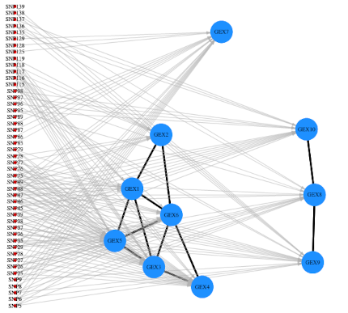

Artigos
Inferência Bayesiana
Regressão Linear e Seleção de Variáveis em Alta Dimensionalidade

Neste relatório, apresentamos brevemente algumas técnicas de caracterização molecular de alta escala, para inferir a estrutura latente de expressões gênicas de acordo com polimorfismos de nucleotídeo único (SNPs), utilizando Modelos Hierárquicos de Regressão não-relacionada aparentemente esparsa (SSUR).
https://github.com/chicodias/21-02/raw/main/SME0809-Bayesiana/MultReg_bayes/relatorio.pdf
COVID-19
Visualização dos Impactos Sociais da COVID-19
Apresentação de parte dos trabalhos desenvolvidos em 2020 pelo grupo de extensão PREDICT no 29º Simpósio Internacional de Iniciação Científica e Tecnológica da USP – SIICUSP 2021.
História da Matemática
O Paradoxo de Russell e sua quebra de paradigma em Teoria dos Conjuntos
Este artigo, escrito no primeiro semestre de 2020, apresenta um panorama histórico sobre a gênese da Teoria dos Conjuntos, analisando as quebras de paradigma que esta causou na matemática, assim como suas implicações na axiomatização desenvolvida posteriormente por sistemas como ZFC e Teoria das Catetegorias.
https://github.com/chicodias/20-01/raw/master/SMA0805%20LAB%20MAT/SMA0805-TRABALHO1.pdf
Métodos Computacionais em Cálculo Numérico
Soluções de Equações Polinomiais - História e Métodos Numéricos em R
Este trabalho foi realizado no segundo semestre de 2016 para a disciplina Laboratório de Matemática Aplicada, no IME-USP
Nele, apresentamos um preve panorama de como podemos calcular soluções númericas de equações polinomiais através dos Métodos de Newton e Secante, utilizando os pacotes do R pracma e spuRs.
https://github.com/chicodias/newton/raw/master/RP3%20-%20FRANCISCO%20E%20JULIA.pdf

Gráfico que ilustra a obtenção da raíz de uma equação polinomial através do Método de Newton